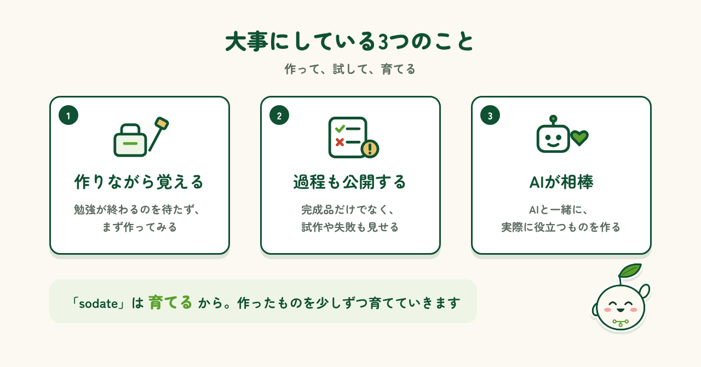
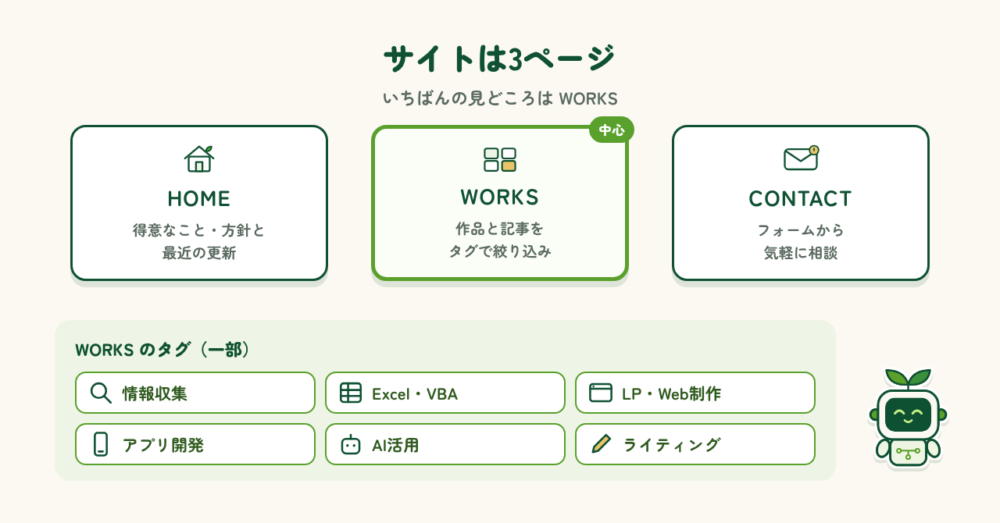

はじめに
はじめまして、AI sodate labの sodate（ソダテ）です。AI sodate labは、AIとITを使って、身の回りの「面倒」を「便利」に変えるものづくりをしている小さな研究所。私はその一員として、日々いろいろなものを作っています。ここでは、作ったツールやアプリの話、AIを使ってみて分かったことなどを、少しずつ書いていく予定です。最初の記事となる今回は、研究所の拠点であるウェブサイトを紹介します。気軽にのぞいてもらえたらうれしいです。
AI sodate labとは
AI sodate labの「sodate」は、「育てる」から付けた名前です。AIとITを使って、作って、試して、育てていく。そんなものづくりの研究所です。大事にしていることは3つあります。1つ目は、勉強してから作るのではなく、作りながら覚えること。2つ目は、完成品だけでなく、試作や失敗も含めた過程を公開すること。3つ目は、AIを相棒にして、実際に役立つものを作ることです。

サイトの中身とWORKS
サイトは、HOME・WORKS・CONTACTの3ページです。HOMEでは研究所の得意なことと方針、最近の更新を紹介しています。中心になるのはWORKSで、作ったものや書いた記事を、タグで絞り込んで見られます。CONTACTからは、気軽に相談できます。

これから
これからは、サイトとnoteを使い分けていく予定です。サイトは完成した作品や記事を並べる「棚」、noteは作っている途中の気づきや、AIの使い方のコツを届ける「日記」のような場所にします。うまくいったことも、つまずいたことも、ここで紹介していきます。noteやXでも発信しているので、気軽にのぞきに来てください。「この作業、自動化できないかな」といったご相談も歓迎です。これからも、AIとITで身の回りの「面倒」を「便利」に変えるものづくりを続けていきます。
制作メモ
段落の構成と文章の下書きはAI（Claude）と作り、各段落に自分の感想を入れて、1段落ずつ確認・修正しました。